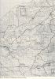
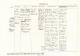
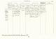

INGLIS, Samuel
-
Name INGLIS, Samuel [1] Born 24 Apr 1802 [1] Christened 2 May 1802 Ladyskirk, Berwickshire, Scotland, United Kingdom  [1]
[1] Gender Male Emigration - LIVERPOOL, 09 Aug 1854, via DIRIGO (1282 tons)
Immigration - PORT ADELAIDE SA, 22 Nov 1854, via DIRIGO
Occupation 1853 Ladyskirk, Berwickshire, Scotland, United Kingdom [1] Samuel is said to have traveled the countryside on a donkey as a cattle dealer and buyer and seller of skins and hides. He was listed as a shepherd when he emigrated to South Australia. - Farmer
Occupation 1855 Encounter Bay, South Australia, Australia Leased for farming Section 301 at Bald Hills. 80 acres, of which 50 had to be put under cultivation and 30 for pastures. Occupation 1861 With sons George and John took up sections 678, 679, 684, 685 (314 acres) .. later adding sections 669-677. Farmed the area for 20 yrs. Religion - Prodestant
Residence - MORPHETT VALE, INMAN VALLEY, MYPONGA, GEORGETOWN and MERRITON SA
Unique Id 64F875522EE84EF8BFF394D9FB5E3A06370E Died 1 Mar 1890 Merriton, South Australia, Australia [1, 2] Buried Crystal Brook, South Australia, Australia [1] - CRYSTAL BROOK SA
Person ID I488 Tree One Last Modified 16 May 2021
Father INGLIS, Samuel, b. 1773, Bellhill Hutton, Berwickshire, Scotland , d. 1853 (Age 80 years) Mother THOMPSON, Elizabeth, b. 1774, England , d. 1852 (Age 78 years) Married 21 Feb 1795 Ladyskirk, Berwickshire, Scotland, United Kingdom [1] Family ID F118 Group Sheet | Family Chart
Family ROBERTSON, Mary, b. 1807, Coldingham, Berwick, Scotland, United Kingdom , d. 5 Oct 1872, Yankalilla, South Australia, Australia (Age 65 years) Married Y [1] Children + 1. INGLIS, Samuel, b. 17 Oct 1829, Berwickshire, Scotland , d. 28 Sep 1887, Elatina, South Australia, Australia (Age 57 years)2. INGLIS, William, b. 1831, d. 9 Jul 1886, Crystal Brook, South Australia, Australia (Age 55 years)3. INGLIS, Helen, b. 1833, d. 1905 (Age 72 years) 4. INGLIS, George, b. 1837, d. 1914 (Age 77 years) 5. ROBERTSON, John, b. 1839, d. 1879 (Age 40 years) 6. INGLIS, Andrew, b. 1841, d. 1931 (Age 90 years) 7. INGLIS, Elizabeth, b. 1842, d. 1917 (Age 75 years) 8. INGLIS, James, b. 1846, d. 23 Dec 1870, Lake Plains, South Australia, Australia (Age 24 years)9. INGLIS, Mary, b. 1851, d. 12 Jan 1881, Telowie, South Australia, Australia (Age 30 years)Last Modified 10 Oct 2008 Family ID F121 Group Sheet | Family Chart
-
Event Map  = Link to Google Earth
= Link to Google Earth Pin Legend  : Address
: Address
 : Location
: Location
 : City/Town
: City/Town
 : County/Shire
: County/Shire
 : State/Province
: State/Province
 : Country
: Country
 : Not Set
: Not Set
-
Photos 
Duns Scotland
The street the Inglis family lived in.
Myponga Homestead
The home of Samuel Inglis and Family, Myponga .. built 1863
Documents 
Map of Yankalilla and Myponga
Showing sections farmed.
Land titles Myponga
Secions 678, 679, 684 685
Land titles Bald Hills Inman Valley
Section 301
-
Notes - William and Helen (Samuel and Mary's second and third children) sailed from London for Port Adelaide on the 13th of January 1852 on the ship Anglia arriving in South Australia on the 20th of May 1852.
The eldest child, Samuel, sailed with his wife Janet from Plymouth on the ship Omega on the 24th of May 1852 arriving in South Australia on the 24th of August 1852.
The remainder of the family, 6 children, with their parents Samuel and Mary, left Scotland on the ship Dirigo (1282 tons) on the 9th August 1854 arriving at Port Adelaide on 22nd November 1854 and joined the earlier arrivals at Morphett Vale.
In 1855 Samuel secured section 301 at Bald Hills Inman Valley and farmed with the assistance of his son's for several years. This section consisted of 80 acres of which 50 had to be put under cultivation and 30 for pastures.
In 1861 Samuel, with his sons George and John, took up sections at Myponga and farmed the area for a number of yrs.
In 1872 Samuel's wife Mary died and was buried at Yankalilla. Samuel then moved with his children William, John, Andrew, Elizabeth and Mary to Gulnare, Georgetown.
In 1873 Samuel left William at Georgetown and took up land at Meriton with Andrew. He died there in 1890 and is buried in the Crystal Brook Cemetery.
- William and Helen (Samuel and Mary's second and third children) sailed from London for Port Adelaide on the 13th of January 1852 on the ship Anglia arriving in South Australia on the 20th of May 1852.
-
Sources